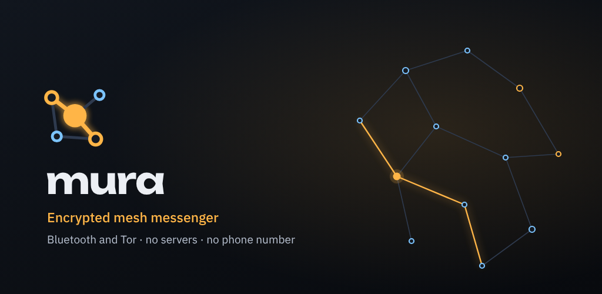
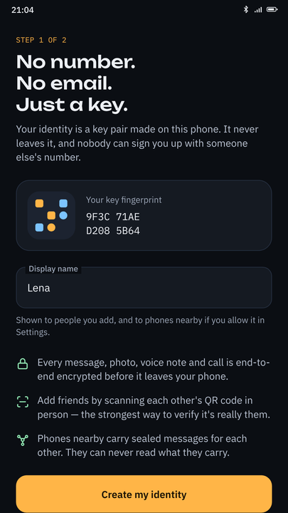
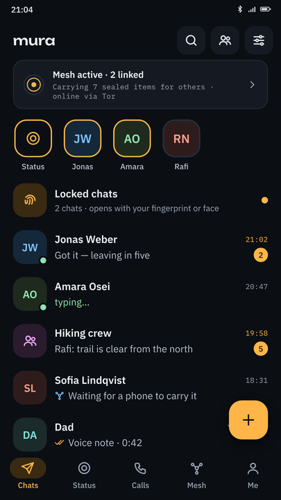
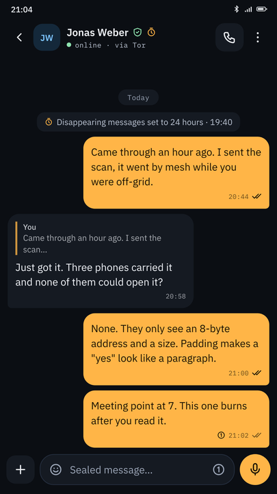
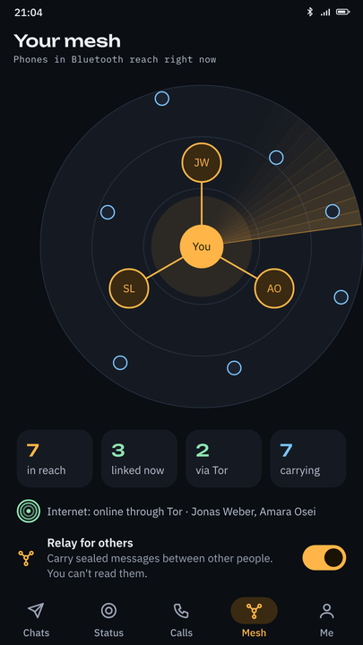
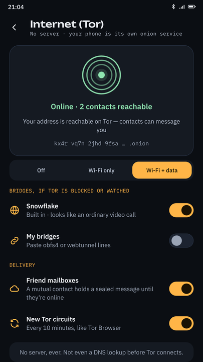
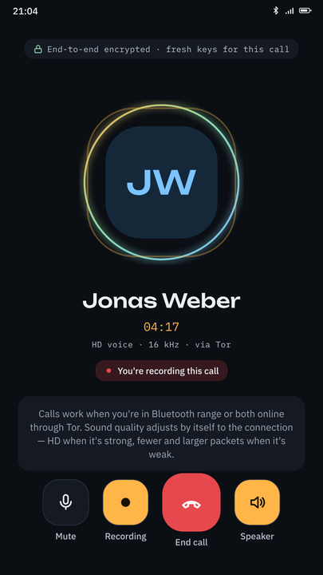
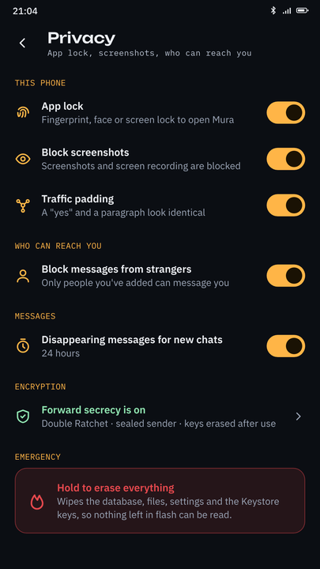
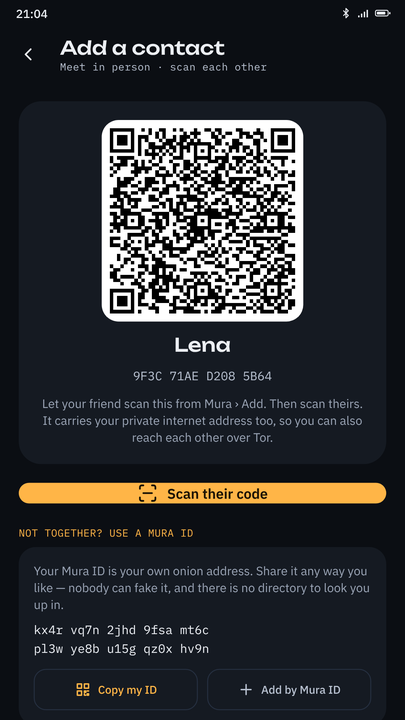

End-to-end encrypted messages, files and voice calls over Bluetooth mesh and Tor. No phone number. No account. No company in the middle — not even us.

Every other private messenger still needs something: a phone number, an account, a server to relay through, a company to trust. Mura needs none of them. Your identity is a key pair your phone generates and never transmits, and your messages travel directly between devices.
No network of any kind. If your contact is out of range, nearby Mura phones carry the sealed message and hop it onward until it arrives. Carriers can never read what they carry.
Your phone runs Tor internally and becomes its own onion service. Neither phone learns the other's IP address, and nothing is sent before Tor connects — not even a DNS lookup.
No phone number, no email, no username on any registry. Nothing about you exists anywhere except on your device and those of people you chose to talk to.
Double Ratchet for chats, hash-ratcheted sender keys for groups, one-time keys per call. Yesterday's messages stay safe even if today's key leaks.
Sealed sender hides who wrote to whom, even from relays. Uniform padding means a one-word reply looks exactly like a paragraph on the wire.
No Play Services, no Firebase, no push service, no analytics, no crash reporter, no advertising ID. Runs natively on GrapheneOS and CalyxOS.
A normal messenger, with the infrastructure removed.








Mura exists because of one gap: no mainstream private messenger works when the network is gone. Our nearest relative is Briar, which also does Bluetooth and Tor — Mura adds voice calls and a full messaging feature set.
| Mura | Signal | Telegram | Session | SimpleX | Briar | ||
|---|---|---|---|---|---|---|---|
| Works with no internet | Yes | No | No | No | No | No | Yes |
| Relayed by other users' phones | Yes | No | No | No | No | No | Yes |
| Tor built into the app | Yes | No | No | No | own network | via Orbot | Yes |
| Voice calls | Yes | Yes | Yes | Yes | Yes | Yes | No |
| No phone number | Yes | beta only | No | No | Yes | Yes | Yes |
| No operator servers | Yes | No | No | No | No | self-host | Yes |
| E2E encrypted by default | Yes | Yes | Yes | No | Yes | Yes | Yes |
| Works without Play Services | Yes | Yes | No | Yes | Yes | Yes | Yes |
| Open source | Yes | Yes | No | client only | Yes | Yes | Yes |
Verified November 2026. Signal began testing phone-number-less registration in an Android beta in September 2026; stable Signal still registers with a phone number. Telegram cloud chats are not end-to-end encrypted — only opt-in Secret Chats are. Corrections welcome via GitHub issues.
Nothing. There is no mechanism by which it could.
| Data | Collected? |
|---|---|
| Phone number | Never requested |
| Email address | Never requested |
| Your address book | Never read |
| Location | Only a location message you send deliberately |
| Message content | End-to-end encrypted |
| Who you talk to | Hidden by sealed sender, even from relays |
| Message sizes | Hidden by padding |
| IP address | Hidden by Tor |
| Analytics / telemetry | None whatsoever |
| Cloud backups | None — backups are files you place yourself |
Mura's cryptography follows well-studied designs and is covered by known-answer unit tests, but review so far has been in-house. No software can be promised bug-free. If your safety depends on this app, read the code, build it yourself, and help us get it audited.
Android 9 or newer, with Bluetooth Low Energy. No Google account, no Play Services, no SIM card needed.
Latest signed APK with SHA-256 checksums.
Planned, with reproducible builds straight from this repository.
./gradlew assembleDebug — see
BUILDING.md.
The best option, because then you know exactly what you are running.
A tampered build of a privacy app is worse than no privacy app at all. Always verify the signing certificate and checksum of anything you install.
Mura is built by the DedSec Cyber Security Research Institute, a small independent security research group working on reverse engineering, malware analysis and defensive security tooling.
Mura came from a simple question: what would a messenger look like if you removed every component that could be subpoenaed, seized, sold, bribed or switched off? The answer was to remove the servers entirely — and once there is no server, there is no account, no directory, no metadata pile and nothing anyone can demand from us, because we hold nothing. That is not a policy promise. It is an architectural fact, and you can verify it in the source.
We make no money from Mura. No ads, no subscriptions, no premium tier, no funding, and no data to sell. dedseec.com